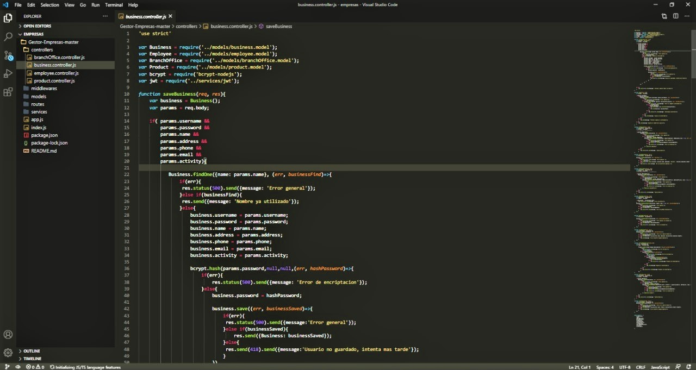

Hoteles
Este es un back-end de un gestor de hoteles, tiene el CRUD de hoteles y de clientes. Aprendi a trabajar de mejor manera por primera vez en nodejs.
Empresas
Este es un back-end de un gestor de empresa, tiene el CRUD de compañias, empleados, sucursales y productos.
